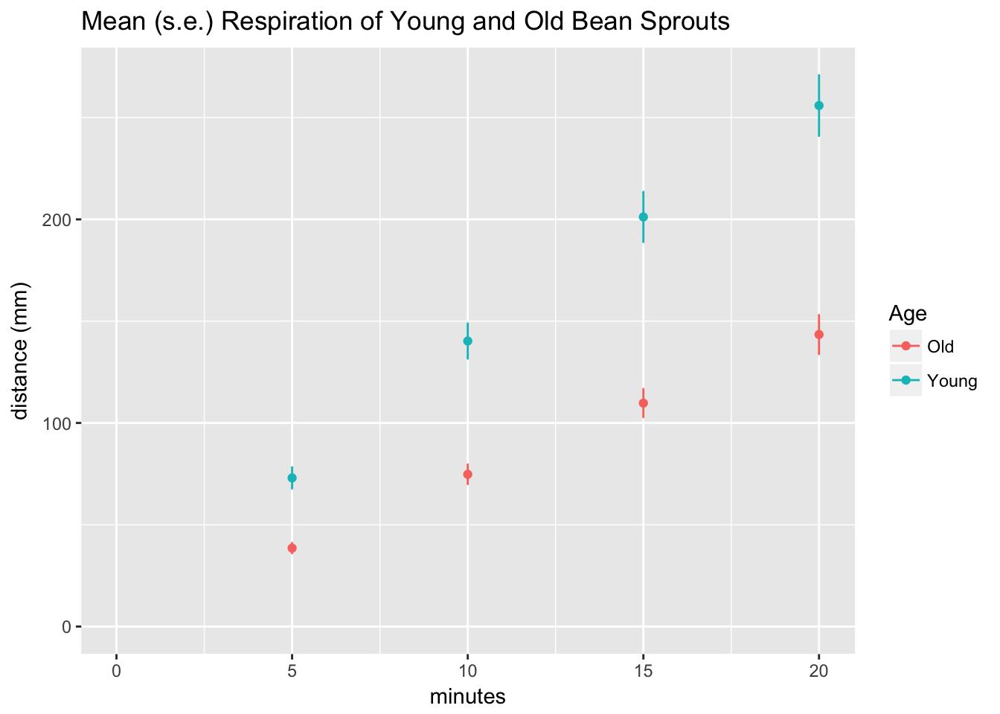
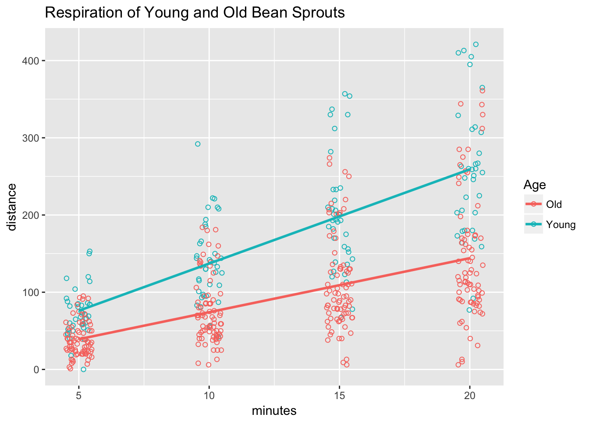

My wife’s high school biology students did a lab recently and had difficulty graphing the pooled data. One student allegedly took 2 hours to figure out how to do this in Excel. This seemed like it would be a nice exercise to try in the Hadleyverse. To replicate this plot, I had to take her students’ data in wide form, tidy it up, calculate means for each group and time, and then plot these.
Experiment Setup
The students had bean sprouts in a closed test tube. The tube was connected by an air-filled tube to a horizontal capillary tube with water inside. As the sprouts underwent cellular respiration, the water level in the capillary moved. The distance moved allegedly correlates with the amount of respiration that the sprouts underwent. The students compared the rate of respiration in “Young” and “Old” mung bean sprouts.
Analysis Plan
I used the dplyr, tidyr, and ggplot2 packages for this analysis.
library(dplyr)##
## Attaching package: 'dplyr'## The following objects are masked from 'package:stats':
##
## filter, lag## The following objects are masked from 'package:base':
##
## intersect, setdiff, setequal, unionlibrary(tidyr)
library(ggplot2)Tidying Data
I imported the data and gathered them into long form.
sprouts <- read.csv("../datasets/respiration.csv")
sprouts <- tbl_df(sprouts)
sprouts <- gather(sprouts, "minutes", "distance", 4:7)
sprouts$minutes <- recode(sprouts$minutes, "X5.min" = 5, "X10.min" = 10,
"X15.min" = 15, "X20.min" = 20)
sprouts## # A tibble: 680 × 6
## Teacher Period Table Age minutes distance
## <fctr> <int> <fctr> <fctr> <dbl> <dbl>
## 1 Ching 1 a Young 5 18
## 2 Ching 1 b Young 5 150
## 3 Ching 1 c Young 5 85
## 4 Ching 1 d Young 5 114
## 5 Ching 1 e Young 5 NA
## 6 Ching 2 a Young 5 88
## 7 Ching 2 b Young 5 59
## 8 Ching 2 c Young 5 71
## 9 Ching 2 d Young 5 69
## 10 Ching 2 e Young 5 NA
## # ... with 670 more rowsCalculating Summary Statistics
I calculated means and standard errors by time and age.
plot_data <- sprouts %>% group_by(minutes, Age) %>%
summarize(avg_dist = mean(distance, na.rm = T),
se_dist = sd(distance, na.rm = T)/sqrt(sum(!is.na(distance))))
plot_data## Source: local data frame [8 x 4]
## Groups: minutes [?]
##
## minutes Age avg_dist se_dist
## <dbl> <fctr> <dbl> <dbl>
## 1 5 Old 38.51948 2.524241
## 2 5 Young 73.00000 5.172839
## 3 10 Old 74.76923 4.802707
## 4 10 Young 140.24324 8.619536
## 5 15 Old 109.75641 6.897758
## 6 15 Young 201.18919 12.290029
## 7 20 Old 143.44595 9.555449
## 8 20 Young 255.94286 14.874994Data Visualization
I plotted the mean and standard errors using ggplot2.
pd <- position_dodge(0)
ggplot(plot_data, aes(x=minutes, y = avg_dist, color = Age, group = Age)) +
geom_errorbar(aes(ymin=avg_dist-se_dist, ymax=avg_dist+se_dist),
width=.1, position=pd) +
geom_point(position=pd) +
ylab("distance (mm)") +
ggtitle("Mean (s.e.) Respiration of Young and Old Bean Sprouts") +
expand_limits(x = 0, y = 0) # to show the origin 
The result was a strikingly linear relationship between distance and time for both age groups.
Model of Age Effect on Respiration Rate
To fit a model to these, I used linear regression. I modeled this using an interaction of time and age.
model1 <- lm(distance ~ minutes + Age + minutes * Age, data = sprouts)
summary(model1)##
## Call:
## lm(formula = distance ~ minutes + Age + minutes * Age, data = sprouts)
##
## Residuals:
## Min 1Q Median 3Q Max
## -182.183 -32.157 -8.183 20.874 216.890
##
## Coefficients:
## Estimate Std. Error t value Pr(>|t|)
## (Intercept) 4.1723 8.2336 0.507 0.613
## minutes 6.9969 0.6049 11.567 < 2e-16 ***
## AgeYoung 10.8904 14.4759 0.752 0.452
## minutes:AgeYoung 5.2091 1.0648 4.892 1.39e-06 ***
## ---
## Signif. codes: 0 '***' 0.001 '**' 0.01 '*' 0.05 '.' 0.1 ' ' 1
##
## Residual standard error: 58.86 on 449 degrees of freedom
## (227 observations deleted due to missingness)
## Multiple R-squared: 0.5216, Adjusted R-squared: 0.5184
## F-statistic: 163.2 on 3 and 449 DF, p-value: < 2.2e-16The model came out pretty nice! Here it is in algebraic form where \(a\) is age (young corresponds to a = 1 and old corresponds to a = 0) and \(t\) is time elapsed in minutes:
\[distance = 4.2 + 7t + 10.9a + 5.2ta\]
When Age = 0 (old sprouts), the equation changes to:
\[distance_{old \space sprouts} = 4.2 + 7t \]
When Age = 1 (young sprouts), the equation changes to:
\[distance_{young \space sprouts} = 15.1 + 12.2t\]
The model only explained about 50% of the variance as seen when we overlay the regression lines over the raw data.
ggplot(sprouts, aes(x=minutes, y=distance, color=Age)) +
geom_point(shape = 1, position=position_jitter(width=.5,height=0)) +
geom_smooth(method=lm, # Add linear regression lines
se=FALSE) +
ggtitle("Respiration of Young and Old Bean Sprouts")## Warning: Removed 227 rows containing non-finite values (stat_smooth).## Warning: Removed 227 rows containing missing values (geom_point).
Discussion
The Hadleyverse method for analyzing this dataset worked out very well with some nice techniques for converting the data from wide to long form and nice data visualizations.
I probably should have forced the linear regression models to have intercepts at 0 because it doesn’t make sense for sprouts to have had any respiration at time 0.
I should acknowledge that much of the code for the visualizations was based on the R cookbook for ggplot2.
Conclusion
Old bean sprouts have lower respiration than young bean sprouts although there is significant variability in the data.